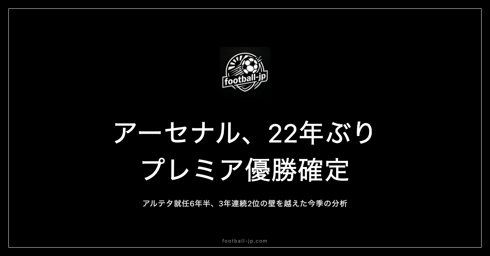

アーセナル、22年ぶりプレミア優勝確定｜アルテタ就任6年半、3年連続2位の壁を越えた
日本時間2026年5月20日未明、プレミアリーグ第37節の結果によってアーセナルの優勝が確定した。第38節を残した段階で勝ち点82。バーンリーに1-0で勝利し、マンチェスター・シティがボーンマスと1-1で引き分けた——22年間の空白に終止符が打たれた夜を検証する。

22年間の空白——インビンシブルズから今日まで
最後に優勝した2003-04シーズンの「インビンシブルズ」は、今もプレミアリーグ史に刻まれる伝説のチームだ。アーセン・ヴェンゲル監督のもと、ティエリ・アンリ、パトリック・ヴィエラ、アシュレー・コールらが揃ったその年のアーセナルは、リーグ38試合を26勝12分無敗で駆け抜けた。負け知らずのシーズンを完走したのは、プレミアリーグ発足以来ただ一度、あの年のアーセナルだけだ。
大きな転換点の一つは、ハイバリーからエミレーツ・スタジアムへの移転だった。2006年に完成した新スタジアムは年間座席数約60,000席という規模で、建設費の返済負担がクラブの財政を長年締め付け、補強面での制約が続いた時期があった。ファブレガス、ナスリ、ファン・ペルシーといった主力選手が次々と放出されていった2010年代初頭は、サポーターにとって最も辛い時期の一つだったかもしれない。
アルテタ就任から6年5ヶ月の積み上げ
2019年12月20日、アルテタはアーセナルの監督に就任した。当時37歳。マンチェスター・シティでグアルディオラのコーチングスタッフとして学んできた若い指揮官が、かつて自分が選手として愛したクラブの再建を引き受けた。
2022-23シーズン、アーセナルはリーグ2位。勝ち点84という高水準の数字を残しながら、マンチェスター・シティの90点に届かなかった。2023-24シーズン、またも2位。勝ち点89。前年より積み上げていながら、シティの93点に届かなかった。2024-25シーズン、再び2位。3年連続で頂点の手が届かなかった。
その壁を、今シーズン初めて越えた。アルテタのコメントはこの夜も静かなものだった。「このクラブ、このサポーター、このチームのためにやってきた。今夜は感謝の言葉しかない」。
優勝を支えた3つの要素
ギェケレシュの加入——決定力の補完
今夏最大の補強はヴィクトル・ギェケレシュ（Viktor Gyökeres）の獲得だった。スウェーデン代表のセンターフォワードをスポルティングCPから約6,300万ユーロで迎え入れた決断は、シーズンを通じて正しかったことが証明された。リーグ戦だけで30ゴール以上を記録し、前シーズンまでのアーセナルが課題としてきたゴール前の決定力に直接答えをもたらした。
サリバとガブリエルのCBコンビ
ウィリアム・サリバとガブリエル・マガリャエスのCBコンビは、リーグ全体で見ても最高水準の組み合わせだ。サリバは22歳ながら空中戦の強さ、1対1の落ち着き、ビルドアップでの判断の精度がすでに完成されたCBのものだ。2人が同時に90分出られたとき、アーセナルの守備は壊れない。
サカ・ウーデゴール・ライスのトリオ
チームの中心になっている3人は変わらなかった。ブカヨ・サカは右ウィングとしてリーグでの数字を更新し続けた。マルタン・ウーデゴールは今シーズンキャプテンとして10番の役割を体現し、後半戦をほぼ全試合でプレーした。デクラン・ライスは就任2シーズン目にして中盤の核として完全に定着した。守備時のボール奪取と攻撃時の推進力の両方を担い、ゴールも増えている。
試合運びの成熟——中堅・下位を落とさない
今シーズンのアーセナルが過去3年と最も変わったのは、ビッグ6以外の試合での取りこぼしが減ったことだ。下位クラブとのアウェーゲームでも安定して勝ち点3を取り続けた。アルテタが6年かけて「強いだけでなく、賢いチーム」を作り上げてきた成果がここに出た。
主要対戦の記録
シティとの直接対決は今シーズンも拮抗していた。ホームでの1-1ドロー、アウェーでの0-1敗北と、勝ち点を取りきれなかった。ただしシティ自身が今シーズンは安定を欠き、勝ち点を落とし続けた。「シティが崩れたときに取りこぼさなかった」ことが差になった。
ブライトンとの2試合では、日本代表・三笘薫の動向も気になったサポーターは多かっただろう。12月27日のアウェーゲームは三笘が体調不良で欠場し、3月5日のホームゲームでは三笘が前半のみの出場で途中交代した。いずれの試合もアーセナルが勝ち点を確保している。football-jpのブライトン関連ページでも三笘のスタッツ推移を追い続けている。
CL決勝展望——ダブルの可能性
2026年5月30日、UEFAチャンピオンズリーグ決勝がアリアンツ・アレナ（ミュンヘン）で行われる。アーセナルの対戦相手はパリ・サンジェルマン（PSG）だ。アーセナルにとってCL決勝は初進出。すでにリーグ優勝が決まった上で決勝を迎えるという状況は、クラブ史上一度もなかった景色だ。
PSGはアシュラフ・ハキミ、ウスマン・デンベレ、ヴィティーニャという個人の質が高い選手たちを要しており、接戦が予想される。リーグとCLの「ダブル」を達成したクラブはプレミアリーグ史でもマンチェスター・ユナイテッド（1999年トレブル）、チェルシー、マンチェスター・シティ（2023年）などの例がある。アーセナルがその名前に並ぶかどうか——5月30日の結果が問いに答える。
アルテタという指揮官の歴史的位置づけ
「現役でプレミアリーグを戦ったプレーヤー出身の監督として、初めてプレミアリーグ優勝を達成した指揮官」という事実がある。アルテタはアーセナルのアカデミーを経てトップチームでプレーし、引退後にコーチの道へ進み、母国クラブに戻って22年ぶりの頂点を実現させた。選手として、コーチとして、監督として、アーセナルという1つのクラブとの深い関わりの中でここまで来た指揮官は、プレミアリーグでも稀有な存在だ。
22年間、待ち続けたサポーターがいた。3年連続2位という壁をともに経験した選手たちがいた。そして、諦めなかった監督がいた。アーセナルが頂点に戻ってきた。